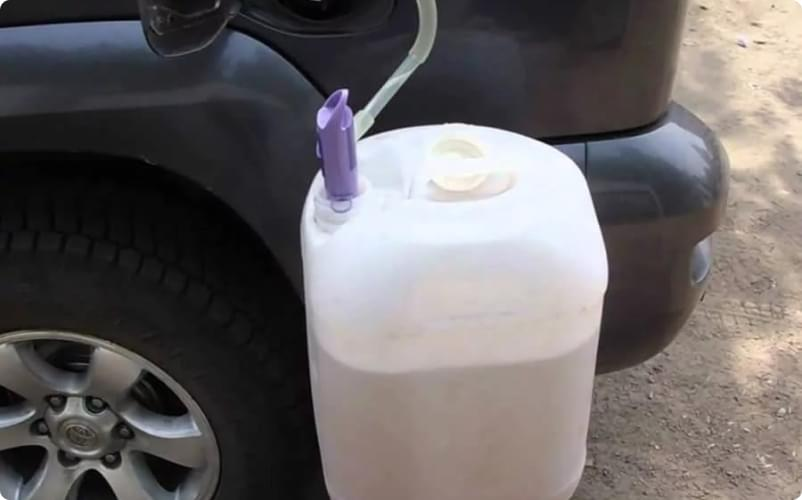
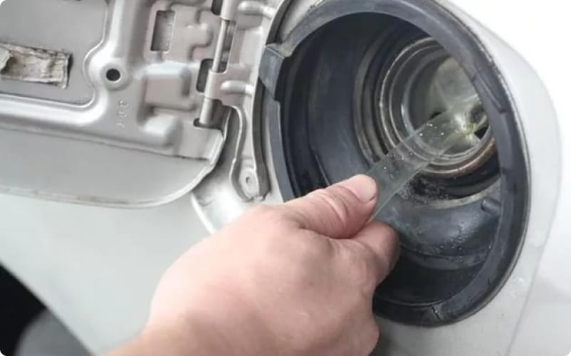

Как слить бензин из бензобака авто
22.02.2017В дороге никто не застрахован от непредвиденных ситуаций. Даже в случае самой тщательной подготовки к поездке, нет гарантий, что что-то может пойти не так как планировалось. Порой в дороге возникает необходимость слить топливо из бака. Возможно, потребуется слить только часть топлива, а может, придется сливать и весь бензин, количество в данном случае роли не играет. Поэтому каждый хороший водитель должен обладать необходимыми знаниями и навыками для того чтобы правильно слить топливо из бака.
Когда необходимо слить бензин из бака
Ситуации, когда необходимо слить топливо из бака зачастую возникают тогда, когда автомобиль был заправлен некачественным бензином. После того, как водитель замечает, что в бак было залито топливо низкого качества, слить такой бензин, наиболее разумное решение, чтобы избежать возможных поломок двигателя. Второй причиной, по которой может понадобиться слить топливо из бака может стать необходимость использования бензина для функционирования каких-либо внешних устройств наподобие генераторов. Еще одним поводом слить бензин может стать его излишнее количество в топливном баке.
Как правильно слить топливо из бака
В случае появления необходимости слить бензин, сделать это можно используя бензонасос, через отверстие для заливки топлива, или через низ бака, где находится специальная крышка. Самый простой и самый доступный метод слить топливо, это использование шланга или трубки. Процедура проста и многие, наверняка не раз ее видели. В бак опускается шланг, далее необходимо потянуть в себя воздух и вовремя вынув изо рта конец шланга, поместить его в емкость для слива бензина. Несмотря на свою простоту, данный метод опасен тем, что по неопытности человек может проглотить некоторое количество бензина. Для того, чтоб избежать таких опасных манипуляций, лучше воспользоваться специальными насосами, которые работают по аналогичному принципу втягивания воздуха. Для того, чтоб слить бензин из бака шланг можно использовать и иначе, без риска наглотаться топлива. Для этого нужно затянуть на конце веревки тугой, плотный узел и просунуть его в шланг, далее веревка будет играть роль поршня и поможет затягивать в шланг топливо вместе с бензином. Однако манипуляции с шлангом для того чтоб слить топливо, возможны только в случае если горловина бака не перекрыта специальной сеткой. В таком случае можно попробовать слить топливо путем снятия шланга бензопровода или через нижнюю часть бака, однако не всегда в нижней части есть специальное отверстие. Отдельно нужно сказать о что слить топливо с инжекторного двигателя возможно только обладая навыками для этого. Для этого нужно соблюдать определенный алгоритм и осуществить манипуляции с топливной магистралью. Знание того как правильно самостоятельно слить топливо, может пригодится любому водителю, как опытному, так и новичку.
